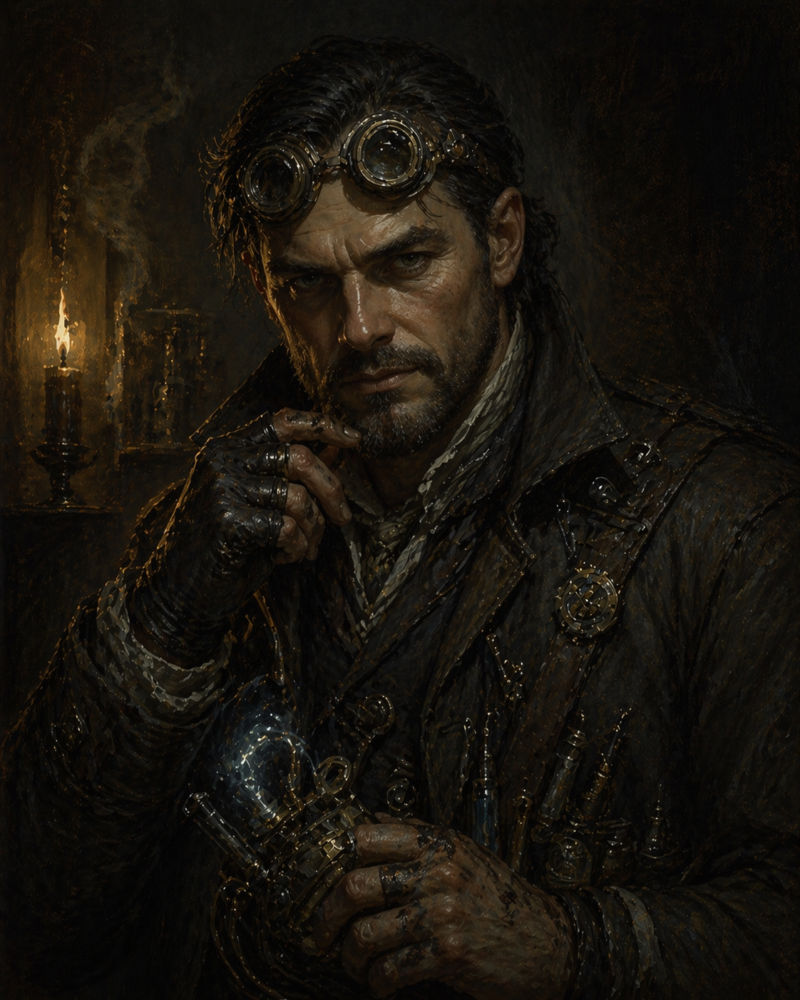

Victor Bartley � "Eyes"
He built machines to watch people. Now something watches him.
Reference: Alchemy & Chemistry ?
Player: Ethan
Story Abilities
- Named Materials — When you bring or craft a specific compound using a name from the Alchemy & Chemistry page, it gains +1 effect level. Vague (“some drugs”) doesn’t qualify. Named and specific (“a vial of Standstill, enough to slow one person’s bleeding”) does. Knowing exactly what you’re working with is the difference between a recipe and expertise.
Background
- Former Hull fabrication specialist � the crew knows him as Victor Bartley
- Doesn't volunteer much about where he was before Nightmarket
- Bonded with Hutton of the Grinders; that faction is now square with the crew
The Hull Scheme
Victor worked with a Ghost Ward named Dirmot Eckardd on an off-the-books Bluecoat intelligence operation. The scheme: craft counterfeit Hulls � nearly perfect replicas, subtly modified � and swap one into each batch of noble house orders during transit. Victor did the hardware. Dirmot bound spirits to the frames. The resulting units became mechanical spies: listening to conversations, memorizing vault codes, occasionally lending hands when needed. It worked for years. One Hull per shipment, undetected, feeding a quiet stream of intelligence to a handful of corrupt inspectors who wanted eyes on the noble-affiliated crime ventures of Doskvol.
One Hull captured intelligence too valuable to sit on � a smuggling rendezvous that put a key kingpin, his lieutenants, and a fortune in contraband in a single warehouse at the same time. The Bluecoats acted. The seizure was successful. The kingpin died in the crossfire. So did a dozen others � officers and criminals alike.
The kingpin's widow, Lady Veyra Strangford, inherited the ruins of the family fortune � and her husband's ghost, restless and furious, whispered the truth to her. She traced the spy Hull back to the factory. Then she spent what remained of her influence climbing into the Department, transforming herself into a political power inside the Bluecoats themselves.
Dirmot, sensing the tide, sold Victor out entirely. Disavowed any involvement. Handed over his name, his workbench, and the coordinates of a safehouse. A few remaining Bluecoat contacts � people who still believed the operation had been worth something � got a warning to Victor before the trap closed. He vanished. Burned the name he was born with. That was four years ago.
Vice � Obligation
He's working something out. The details aren't for general discussion. Whatever it is, it pulls at him constantly � every lead, every careful contact, every risk taken in the direction of answers.
Someone with access to Department records who's willing to share them quietly. The relationship is mutual and carefully maintained.
Friend & Foe
Someone from his past who helped him when it mattered. Still has Department access. Victor's feelings about the Bluecoats are complicated, but this person is the exception he allows himself.
A Ghost Ward. The animosity is real and unresolved. Victor doesn't talk about how it started.
What the Crew Has Heard
- Hates nobility.
- Afraid of water. Cannot swim.
- Has ties to the Bluecoats � mixed loyalties, inconsistent attitude. Avoids them and helps them depending on the day.
- A noble house has a bounty out for anyone who can provide his location. There may be past beef.
Character Sheet
?????????
??????
| Level 1 | Twisted Ankle | Called by the Train |
| Level 2 | � | � |
| Level 3 | � | |
- Artificer � You can Tinker with arcane or alchemical items. You get +1d to your load when taking alchemical or specialized equipment.
- Scuba Masks � modified breathing equipment for underwater work
- Diving Bell � heavy salvage and deep-water access equipment
He built gear for going underwater. He is afraid of water and cannot swim. This is either impressive engineering or a coping mechanism. Possibly both.
| Hunt | ???? | Insight |
| Study | ???? | Insight |
| Tinker | ???? | Insight |
| Finesse | ???? | Prowess |
| Prowl | ???? | Prowess |
| Wreck | ???? | Prowess |
The Hull Parts
The Hull wreckage recovered from the ghost train is unusual � modified in ways that suggest whoever built them understood something about liminal spaces. Victor would recognize the quality of work. What does he want to do with them?
Surveillance & Being Watched
In the Sunken Temple, Victor will notice surveillance infrastructure built into the ancient stone � ghostly, old, but functional in a supernatural sense. Someone has been watching this place for a long time. His instincts as a spy Hull builder will recognize the pattern immediately. Who built it, and why?
Connections
- Dirmot Eckardd � former partner and Ghost Ward; sold him out; unresolved and unforgiving
- Lady Veyra Strangford � the widow; climbed into the Department; the bounty on his location is almost certainly hers
- Unnamed Bluecoat contact � vice purveyor; saved him once; the debt runs in both directions now
- Hutton � bonded during downtime; Grinders now square with the crew because of it
Moments to Create
Ethan has flagged that "Victor Bartley" may be a four-year alias and that his real name is something the crew doesn't know yet. Two options are on the table: a genuine reveal moment � the ghost train score as the trial by fire that earns the crew his real name � or simply letting it be that the crew already knows him as Victor and that's who he is now. Either works. Don't force it; if a natural moment presents itself, it'll land. If not, let it go.
- The family disappearance thread � what actually happened, and is it connected to the scheme?
- Dirmot Eckardd surfacing � in what capacity, and does Victor get first move?
- Lady Strangford's reach inside the Department becoming a direct problem
- The Bluecoat contact asking for something in return � the relationship turning transactional at a bad moment
- The scuba gear going into play somewhere underwater � given he can't swim, this will be tense
- The Sunken Temple's surveillance architecture � he recognizes the pattern; someone was watching long before they arrived
- Downtime: the recovered Hull parts � what is he building, and what does it say about what he wants now?